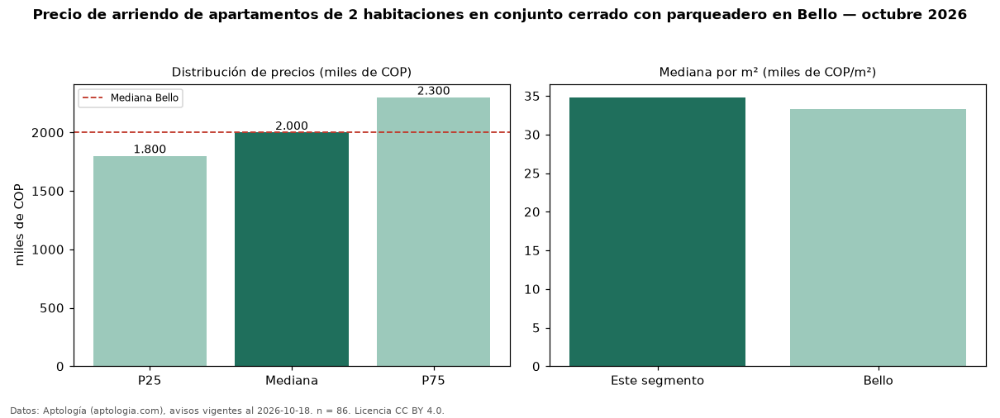

Precio de arriendo de apartamentos de 2 habitaciones en conjunto cerrado con parqueadero en Bello — octubre 2026
COP 2,00 millones al mes es el canon mediano de apartamentos de 2 habitaciones en conjunto cerrado con parqueadero en arriendo en Bello (n = 86 avisos). Eso es 10 % más que la mediana de los apartamentos de 2 habitaciones en conjunto cerrado en arriendo de Bello (COP 1,82 millones, n = 154); este segmento reúne el 56 % de esos avisos. Por metro cuadrado, la mediana es COP 34.808/m² al mes (n = 86), 4 % por encima de los apartamentos de 2 habitaciones en conjunto cerrado en arriendo de Bello (COP 33.333/m²). El área mediana anunciada es 58 m². El estrato más frecuente es 4 (51 % de los avisos con estrato). La mediana de todos los apartamentos en arriendo de Bello es COP 2,00 millones (+0 % de diferencia). La mitad central de los avisos va de COP 1,80 millones a COP 2,30 millones (razón 1,3), una dispersión baja. Datos: Aptología (aptologia.com), CC BY 4.0 — https://www.aptologia.com/arriendo/bello. Archivos: PDF, CSV con las cifras y gráfica PNG.

| Avisos únicos | 86 |
|---|---|
| Percentil 25 | COP 1.800.000 |
| Mediana | COP 2.000.000 |
| Percentil 75 | COP 2.300.000 |
| Mediana por m² | COP 34.807 |
Fuente: avisos vigentes de portales inmobiliarios recopilados por Aptología, deduplicados (mínimo 30 avisos únicos por celda). Precios pedidos, no cerrados. Fecha: 2026-10-18.